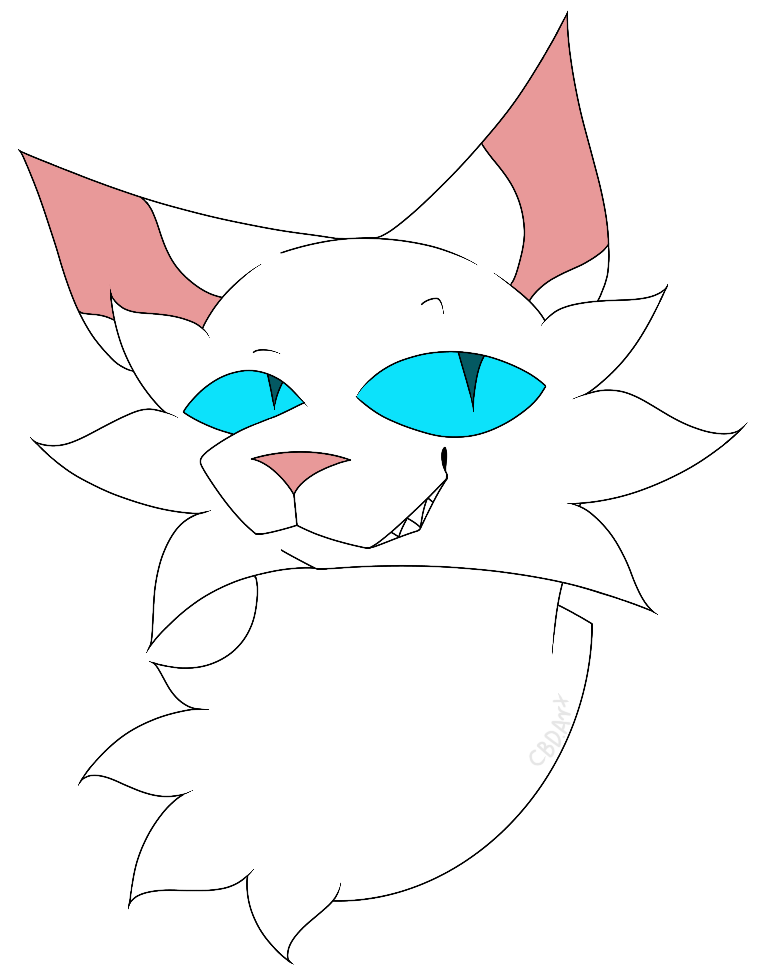
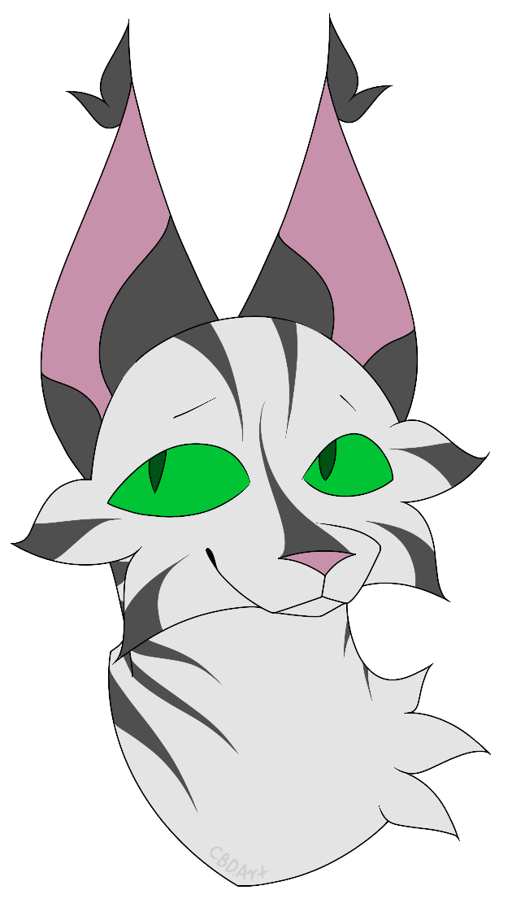

Special Edition Books
Paper-Over-Board books
The paper-over-board (POB) books are incredibly rare 'Warriors' books that started appearing around 2008.
There were six of these books in total, each of them including two books in one. For example, the first POB book contained both 'Into The Wild' and 'Fire And Ice', when those two books are usually found seperate.
These special editions are no longer being printed, having stopped after the second series, and they are much harder to find because of this. These books can only be purchased second-hand nowadays. Currently, there has been no officially stated reason as to why these books have not been reprinted, though some people over the years have suspected that these books simply didn't make as much money as the books on their own
'Into the wild/'Fire and Ice', 'Forest of Secrets'/'Rising Storm' and 'A Dangerous Path'/'The Darkest Hour' make up the first series ('The Prophecies Begin').
'Midnight'/'Moonrise', 'Dawn'/'Starlight' and 'Twilight'/'Sunset' make up the second series (The New Prophecy)
click here to view the covers
Alternate Covers
The original 'Warriors' book covers were drawn by Wayne McLoughlin, who illustrated all main-series books up until the end of arc five; 'Dawn of the Clans'
The fourth 'Warriors' book, titled 'Rising Storm', was given two different covers by Wayne. One cover featured the main character, Fireheart, with his nephew, Cloudkit. However, an alternate cover for this book features Fireheart with another character, Sandstorm.
Wayne passed away in 2015, and since then each of the main-series books and super editions have been given new cover art by Owen Richardson
click here to view the Cloudkit cover, and click here to view the Sandstorm cover

Reprinted Books
Over the years, there have been books that have had scenes and dialogue removed from later editions.
One of these mistakes occurs in 'Rising Storm'. On top of having two different covers (excluding the new covers given to each book after Wayne's passing), this book has also gone through a reprint, as there is a scene that depicts cats being able to taste honey. Cats do not have the ability to taste sweet things, and people were quick to point this mistake out.
Another mistake was found in the super edition 'Bramblestar's Storm', where Graystripe, during his retirement, mentions how he can 'scarcely believe that his daughter Mistystar is the leader of RiverClan'. This is entirely false, as he is not the father of either Mistystar or Stonefur, Bluestar and Oakheart are the true parents. What makes this mistake much more confusing is that Mistystar is older than Graystripe.
While this isn't counted as a mistake, there is dialogue in 'Squirrelflight's Hope' that is set to be removed due to an offensive implication, though this change hasn't been made fully, as there are still copies of the book being sold with said offensive dialogue
Short Stories/Plays
Short stories and even plays have been created by the authors to expand on the main story, and there are currently 10 short stories and two plays that have been officially listed.
Of the two plays that have been written over the years, no footage of any performances have been found, though scripts of these plays are available to read online. One of these plays, titled 'After Sunset: We Need To Talk', focuses on Leafpool and Crowfeather, after the events of 'The New Prophecy'. This short play features the two meeting at the borders that divide ThunderClan and WindClan territory, before they are spotted by patrols from both clans. The other short play, titled 'Beyond the Code: Brightspirit's Mercy', focuses on Jaypaw, Hollyleaf and Lionblaze as they are told by three StarClan cats, Braveheart, Shiningheart and Brightspirit about how the warrior code isn't everything, and how they should assist in aiding the other clans through their hunger. This play was written in honour of a young fan, Emmy Cherry, who passed away in 2008 after a tornado struck her home.
The short stories were written by one of the authors, Victoria Holmes, in order to add more depth to the world and characters of 'Warriors'. 'Spottedleaf's Honest Answer', for example, gave the reader further insight into Spottedleaf and her feelings for Firestar, both in life and death. There are also stories that expand on the clans and their traditions, such as 'The Longest Night', which gave us the idea of a 'Warriors' version of Christmas, and how ThunderClan specifically celebrates it. All 10 of these stories can be found online, and a few were once available to read on the original 'Warriors' app.

Links to Stories/Plays
Short Stories:
'A Fear of Fire'
'After Sunset: The Right Choice?'
'Beyond the Fence'
'Spottedleaf's Honest Answer'
'The Clans Decide'
'The Death of Bright Stream'
'The Disappearing Herbs'
'The Elders' Concern'
'The Hidden Prophecy'
'The Longest Night'
Plays:
'After Sunset: We Need to Talk'
'Beyond the Code: Brightspirit's Mercy'